【Golang】汇编语言
汇编语言是最接近机器代码的人类可读语言，通过阅读汇编代码，我们可以了解到自己所编写的高级语言代码最终生成的指令都是什么，以便更好的掌握高级语言和了解计算机系统。Go 语言的汇编器基于 Plan9 汇编器，并且在此基础之上定义了一些创新。

X86-64 汇编
在学习 Go 语言的汇编语法之前，先大致了解下基于 X86-64 系列处理器的汇编语言，X86-64 是最常见的 Intel 处理器系列，普遍应用于桌面电脑和服务器中，本节的内容大都总结于《深入理解计算机系统》这本书。
示例
演示一段简单的C代码生成的汇编指令。假设我们写了一个 C 语言代码文件，mstore.c，它包含如下的函数定义：
1 | long mult2(long, long); |
使用如下的指令生成汇编代码，汇编代码会保存在 mstore.s 中：
gcc -Og -S mstore.c
其内容位：
1 | [root@ecs-335906 ~]# cat mstore.s |
我们也可以使用 -c 命令行选项，编译并汇编该段代码，这会生成一个二进制文件 mstore.o，我们可以使用 GDB 调试工具查看 multstore 生成的汇编指令：
1 | [root@ecs-335906 ~]# gdb mstore.o |
或者使用反汇编工具将二进制文件翻译成汇编代码格式：
1 | [root@ecs-335906 ~]# objdump -d mstore.o |
我们可以看到 multstore 函数编译成二进制文件之后，占据了 14 字节，反汇编工具将它们分成了 6 组，每组 1~5 个字节不等，每组都是一条指令，右边是等价的汇编语言。其中一些关于机器代码和它的反汇编表示的特性值得注意：
- x86-64的指令长度从1到15个字节不等。常用的指令以及操作数较少的指令所需的子节数少，而那些不太常用或操作数较多的指令所需字节数较多。
- 设计指令格式的方式是，从某个给定位置开始，可以将字节唯一地解码成机器指令。例如，只有指令
pushg %rbx是以字节值53开头的。 - 反汇编器只是基于机器代码文件中的字节序列来确定汇编代码。它不需要访问该程序的源代码或汇编代码。
- 反汇编器使用的指令命名规则与 GCC 生成的汇编代码使用的有些细微的差别。在我们的示例中，它省略了很多指令结尾的
q。这些后缀是大小指示符，在大多数情况中可以省略。相反，反汇编器给call和ret指令添加了q后缀，同样，省略这些后缀也没有问题。
以 . 开头的都是指导汇编器和链接器工作的伪指令，去除它们之后，我们可以看到 multstore 函数转换成汇编语言之后的指令位：
1 | multstore: |
我们常用的 GCC，OBJDUMP 生成的汇编代码是 ATT（根据 AT&T 命名，它是运营贝尔实验室多年的公司） 格式，有些 Microsoft 生成的格式是 Intel 的，这两种格式在许多方面有所不同，例如，我们可以用下面的指令生成 multstore 函数的 Intel 格式的汇编代码：
gcc -Og -S -masm=intel mstore.c
1 | multstore: |
数据格式
大多数GCC生成的汇编代码都有一个字符的后缀，表明操作数的大小。例如数据传送指令有四个变种：movb（传送字节），movw（传送字），movl（传送双字） 以及 movq（传送四字）。汇编代使用后缀 l表示4字节整数和8字节双精度浮点数，这不会产生歧义，因为浮点数使用的一组完全不同的指令和寄存器。
Intel 派系中，“字（Word）”表示16位数据类型，因此，32位称之为 “双字”，64位称之为 “四字”。下表给出C语言数据类型和对应的 X86-64 表示。
| C声明 | Intel 数据类型 | 汇编代码后缀 | 大小（字节） |
|---|---|---|---|
| char | 字节 | b | 1 |
| short | 字 | w | 2 |
| int | 双字 | l | 4 |
| long | 四字 | q | 8 |
| char* | 四字 | q | 8 |
| float | 单精度 | s | 4 |
| double | 双精度 | l | 8 |
寄存器
一个 X86-64 的CPU包含一组16个存储64位值得通用目的寄存器，这些寄存器可以用来存储整数数据和指针。名称都是以 %r 开头，不过后面还跟着一些不同的命名规则的名字，这是由于指令集烟花而来的。最初 8086 CPU 有8个16位的寄存器，即 %ax ~ %sp，每个寄存器都有特殊的用途。扩展到 IA32架构时，这些寄存器也扩展成32位的，标号从 %eax ~ %esp。扩展到 X86-64 之后，原来的8个寄存器扩展成64位，标号从 %rax ~ %rsp，除此之外，还增加了8个新的寄存器，它们的标号是按照新的命名规则制定的：从 %r8 ~ %r15。
在常见的程序里，不同的寄存器扮演着不同的角色，其中最特别的是栈指针：%rsp，用来指明运行时栈的结束为止，约定的用途如下：
有很多指令能用于复制生成1字节，2字节，4字节和8字节的值。当这些指令以寄存器作为目标时，对于生成小于8字节结果的指令，寄存器中剩余的字节会被按照以下两条规则处理：
- 生成1字节和2字节数字的指令，会保持剩下的字节不变；
- 生成4字节数字的指令，会把高位4字节置为0；
操作数
大多数指令有一个或者多个操作数（operand），指示处执行一个操作中要使用的源数据值，以及放置结果的目标位置。X86-64 支持多种数据格式，源数据可以是常数值，或者从寄存器或者内存中读出，而结果呢可以放在寄存器或者内存中，因此各种不同的操作数可以分为三种类型：立即数，寄存器， 内存引用。
立即数
在ATT密码格式中，立即数的表示是 $ 后面跟一个用标准C表示法的表示的整数。比如 %-577 或者 $0x1F。不同的指令允许的立即数范围不同，汇编器会自动选择最紧凑的方式进行数值编码。
寄存器
寄存器表示寄存器中的内容，所有16个寄存器中的1字节，2字节，4字节或者8字节中一个作为操作数，这些字节数分别对应于8位，16位，32位或者64位。我们用表示 表示任意寄存器 a，用引用 表示它的值，这是将寄存器看成一个数组 R，用寄存器标识符作为索引。
内存引用
内存引用根据计算出来的地址（通常称为有效地址）访问某个内存位置。通常情况下，我们将内存看成一个大的字节数组，因此用符号 表示对存储在内存中从地址 Addr 开始的 b 个字节值的引用，为了方便，通常省去下标 b，最常用的内存引用表示形式是 ，这里的引用有四个组成部分：
Imm：立即数偏移；- ：基址寄存器，必须是64位寄存器；
- ：变址寄存器，必须是64位寄存器；
s：比例因子，必须是1，2，4，或者8，编译器根据源代码中数组的类型来确定比例因子，char类型是1，int类型是4，double类型是8。
有效地址被计算为：，引用数组元素时，会用到通用模式，其他形式都是这种通用形式的特殊情况，省略了某些部分而已，有关计算机寻址方式可以查看：
下面的表格给出常用的操作数类型机器含义：
| 类型 | 格式 | 操作数值 | 名称 |
|---|---|---|---|
| 立即数 | $Imm |
Imm |
立即数值 |
| 寄存器 | 寄存器寻址 | ||
| 存储器 | Imm |
M[Imm] |
绝对寻址 |
| 存储器 | 间接寻址 | ||
| 存储器 | (基址+偏移量)寻址 | ||
| 存储器 | 变址寻址 | ||
| 存储器 | 变址寻址 | ||
| 存储器 | 比例变址寻址 | ||
| 存储器 | 比例变址寻址 | ||
| 存储器 | 比例变址寻址 | ||
| 存储器 | 比例变址寻址 |
数据传送
汇编代码中最常见的就是数据传送指令，经常需要将数据从一个位置复制到另外一个位置。操作数表示的通用性使得一条简单的数据传送指令能够许多机器中好几条不同的指令才能完成的功能。最简单的数据传送指令是 MOV 类，这些指令把数据从源位置复制到目的位置，不能做任何变化。MOV 类指令主要由四条指令组成：movb，movw，movl 以及 movq，这些指令执行同样的操作，区别在于它们传送的数据大小不同，分别是：1，2，4 和 8 字节。
| 指令 | 效果 | 描述 |
|---|---|---|
MOV S, D |
D<-S |
传送 |
movb |
传送字节 | |
movw |
传送字 | |
movl |
传送双字 | |
movq |
传送四字 | |
movabsq I, R |
R<-I |
传送绝对四字 |
源操作数指定的是一个立即数，存储在寄存器或者内存中，目的操作数指定一个位置，要么是一个寄存器，要么是一个内存地址。X86-64 添加了一条限制，传送指令两个操作数不能都指向内存地址，所以要在内存之间传送数据，就需要两次操作。
大多数情况下， MOV 指令大多数情况下，只会更新目的操作数指定的那些寄存器或者内存位置，根据指令最后一个字符指定的大小，例如每次 movb 指令只会更新一个字节，movw 更新双字16个字。有个例外就是 movl 指令以寄存器位目的地址时，它会把寄存器的高4字节置为0（X86-64惯例）。
下面是几个数据传送的指令：
movl $0x4050, %eax立即数->寄存器，4字节movw %bp, %sp寄存器->寄存器，2字节movb (%rdi, %rcx), %al内 存->寄存器，1字节movb ($-17, (%rsp))立即数->内 存，1字节movq %rax, -12(%rbp)寄存器->内 存，8字节
除此之外，movq 指令只能以表示32位补码数字的立即数位源操作数，然后把这个值符号扩展到64位的值，放到目的位置。而 movabsq 指令能够以任何64位立即数值作为源操作数，并且只能以寄存器作为目的。
还有两类寄存器，在移动数据时能够对符号位进行扩展，MOVZ 类中的指令把目的剩余字节填充位0，而 MOVS 类中的指令通过符号扩展来填充，把源操作数的最高位进行赋值，这两类指令最后两个字符都是大小指示符，第一个字符指定源操作数的大小，第二个指定目的大小。
| 指令 | 效果 | 描述 |
|---|---|---|
MOVZ S, R |
D<-S（零扩展） |
以零扩展进行传送 |
movzbw |
将做了零扩展的字节传送到字 | |
movzbl |
将做了零扩展的字节传送到双字 | |
movzwl |
将做了零扩展的字传送到双字 | |
movzbq |
将做了零扩展的字节传送到四字 | |
movzwq |
将做了零扩展的字传送到四字 |
或者
| 指令 | 效果 | 描述 |
|---|---|---|
MOVZ S, R |
D<-S（符号扩展） |
以传送符号扩展的字节 |
movsbw |
将做了符号扩展的字节传送到字 | |
movsbl |
将做了符号扩展的字节传送到双字 | |
movswl |
将做了符号扩展的字传送到双字 | |
movsbq |
将做了符号扩展的字节传送到四字 | |
movswq |
将做了符号扩展的字传送到四字 |
下面是一段 C 代码的示例生成的汇编代码：
1 | long exchange(long *xp, long y) { |
根据约定，参数 xp 和 y 分别存储在寄存器 %rdi 和 %rsi 中，返回值存储在 %rax 中。先将 xp 中的值放到 %rax 中返回，然后将 y 的值放到 xp 指向的内存地址。
1 | exchange: |
压栈和出栈
栈在处理函数（过程）调用中起到至关重要的作用，栈是一种数据结构，可以添加或者删除，遵循后进先出的原则。通过 push 操作将数据压入栈中，通过 pop 操作删除数据，因此，弹出的值永远是最近被压入而且仍然在栈中的值。
在实现上，栈可以以数组的形式实现，总是从数据的一段插入和删除元素，这一端称为 栈顶。在 x86-64 中，程序栈放在内存中的某个区域，栈是从高地址向低地址增长，栈顶元素的地址是所有栈元素地址中最低的。
| 指令 | 效果 | 描述 |
|---|---|---|
pushq S |
R[%rsp]<-R[%rsp]-8；M[R[%rsp]] <- S |
将四字压入栈 |
popq D |
D<-M[R[%rsp]]；R[%rsp]<-R[%rsp]+8 |
将四字弹出栈 |
pushq 的功能是将数据压入到栈上，而 popq 指令是弹出数据，这些指令都只有一个操作数，压入的数据和弹出的数据目的地。
pushq 在压栈之前，首先要将栈指针减8，然后将数据写到栈顶位置，因此，指令 pushq %rbp的行为等于下面两条指令：
1 | subq %8, %rsp |
由于压栈和出栈操作太频繁，所以用一个单独的指令实现，减小最终生成的二进制文件体积。因为，上面两条指令在机器代码中占用8个字节，而 pushq 只需要1个字节。
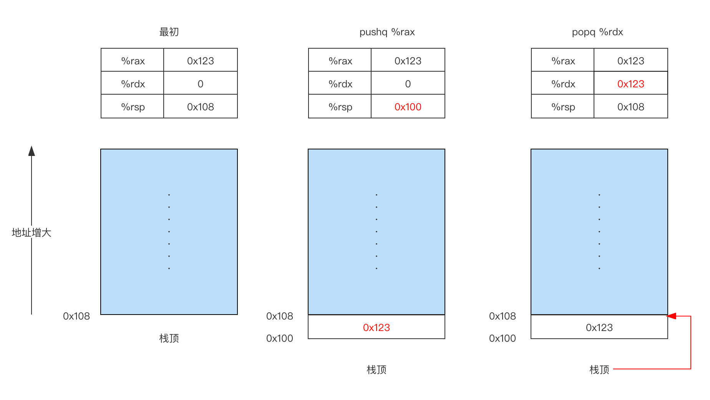
x86-64 中，栈的方向是向低地址增长，所以压栈是减小栈指针（%rsp）的值，并将数据存储到内存中，而出栈是从内存中读取数据，并增加栈的指针。
算数和逻辑操作
下面的表格列出了一些整数和逻辑操作，大多数操作都分成了指令类，这些指令类有各种带不同大小操作数的变种。指令类 ADD 由四条加法指令组成：addb，addw，addl 和 addq，下面给出的每个指令都有对这四种不同大小数据的变种（除 leaq 之外），这些指令被分成四组：加载有效地址，一元操作，二元操作和移位。
| 指令 | 效果 | 描述 |
|---|---|---|
leaq S, D |
D<-&S |
加载有效地址 |
INC D |
D <- D+1 |
加1 |
DEC D |
D <- D-1 |
减1 |
NEG D |
D <- - D |
取负 |
NOT D |
D <- ~ D |
取补 |
ADD S, D |
D <- D + S |
加 |
SUB S, D |
D <- D - S |
减 |
IMUL S, D |
D <- D * S |
乘 |
XOR S, D |
D <- D ^ S |
异或 |
OR S, D |
`D <- D | S` |
AND S, D |
D <- D & S |
与 |
SAL k, D |
D <- D << k |
左移 |
SHL k, D |
D <- D << k |
左移（等同于 SAL） |
SAR k, D |
D <- D >> k |
算数右移 |
SHR k, D |
D <- D >> k |
逻辑右移 |
加载有效地址
leaq（加载有效地址）指令实际上是 movq 指令的变形，它的指令形式是从内存读取数据到寄存器，但实际上根本就没有引用内存。它的第一个操作数看上去是一个内存引用，但是该指令实际上并不从指定位置读取数据，而是将有效地址写入到目的操作数。
除此之外，它还可以简单的描述普通的算数操作，例如，如果寄存器 %rdx 的值为 x，那么指令 leaq 7(%rdx, %rdx, 4), %rax 将设置寄存器 %rax 的值为 7 + (x + x * 4) = 5x + 7，编译器经常会使用 leaq 的一些灵活用法，看下面的示例代码：
1 | long scale(long x, long y, long z) { |
%rdi = x, %rsi = y, %rdx = z, %rax = t，编译之后的汇编代码位：
1 | scale: |
一元操作和二元操作
一元操作，及时源又是目的，这个操作数可以是寄存器，也可以是内存位置。例如，incq (%rsp) 会使栈顶的8字节元素加1，这种语法类似于C语言的++ 和 -- 从操作。
二元操作中，第二个操作数既是源又是目的，类似于C语言中的 -=，+=，*= 运算操作符。例如，subq %rax, %rdx 是将寄存器 %rdx 减去 %rax 的结果保存在 %rdx 中，第一个操作数可以使立即数，寄存器或是任意内存位置，第二个操作数可以是寄存器或是内存位置。
移位操作
移位操作，先给出移位量，然后第二项给出的是要移位的数，可以进行算数和逻辑右移。移位量可以是一个立即数，或者放在单字节寄存器 %cl 中（这些指令很特别，只允许以这个特定的寄存器作为操作数）。原则上来说，1字节的移位量使得移位量的编码范围可以达到 。
x86-64 中，移位操作对 w 位长的数据值进行操作，移位量由 %cl 寄存器的低 m 位决定，这里 ，高位会被忽略。所以，当寄存器 %cl 的十六进制位 %0xFF 时，指令 salb 会移 7 位，salw 会移 15 位，sall 会移 31 位，salq 会移 63 位。
左移指令有两个名字：SAL 和 SHL，两者的效果是一样的，都是讲右边填上0。右移指令不同， SAR 执行算数移位（填上符号位），而 SHR 执行逻辑移位（填上0）。移位操作的目的操作数可以是一个寄存器或者一个内存位置。
特殊的算数操作
两个64位有符号或无符号整数相乘得到的乘积需要128位来表示。 x86-64 指令集对128位（16字节）数的操作提供有限的支持。延续字（2字节），双字（四字节），四字（8字节）的命令管理，Intel 将16字节的数称为八字（oct word）。
| 指令 | 效果 | 描述 |
|---|---|---|
imulq S |
R[%rdx]: R[%rax] <- s * R[%rax] |
有符号全乘法 |
mulq S |
R[%rdx]: R[%rax] <- s * R[%rax] |
无符号全乘法 |
cqto S |
R[%rdx]: R[%rax] <- 符号扩展（R[%rax]） |
转换为八字 |
idivq S |
R[%rdx]<-R[%rdx] <- R[%rax] mod S; R[%rax]<-R[%rdx] <- R[%rax] ÷ S; |
有符号除法 |
divq S |
R[%rdx]<-R[%rdx] <- R[%rax] mod S; R[%rax]<-R[%rdx] <- R[%rax] ÷ S; |
无符号除法 |
imulq 指令有两种不同的形式，双操作数和单操作数，单操作数时，计算两个64位值得全128位乘积，位补码乘法。而 mulq 是无符号乘法。这两个指令都要求一个参数必须在寄存器 %rax 中，而另一个作为指令的源操作数给出。然后乘积的高64位放在 %rdx 中，低64位放在 %rax 中。
看下面的代码示例，使用文件 inttypes.h 的定义，它是标准C扩展的一部分，只不过，它没有提供128位的值，因此只能依赖GCC提供的对128位的支持，声明一个新的类型 uint128_t。
1 |
|
gcc -Og -S imulq.c
生成的汇编代码如下，dest in %rdi, x in %rsi, y in %rdx，
1 | store_uprod: |
函数调用
函数（过程）是软件设计中一种重要的抽象，它提供了一种封装代码的方式，用一组指定的参数和可选的一个或者多个返回值实现某种功能，然后又可以在程序的不同位置调用这个函数。
假设函数 P 调用函数 Q，要在机器级实现 P 调用 Q，然后从 Q 返回，我们必须考虑以下动作：
-
传递控制：在进入函数Q的时候，程序计数器必须被设置位Q的起始地址，然后再返回时，必须将程序计数器设置为P调用Q后面的那条指令地址； -
传递数据：P必须能向Q提供一个或者多个参数，Q必须能够向P返回一个值； -
内存释放和分配：在调用开始时，Q可能需要位局部变量分配空间，而在返回时，需要释放这些空间；
C 语言中，函数调用机制的实现得在于应用栈这个先进后出内存管理原则。在 P 调用 Q 的过程中，当 Q 在执行时，P 以及向上追溯到 P 的调用链的函数，都是暂时挂起的。当 Q 运行时，它只需要为局部变量分配新的存储空间，当它返回时，任何为它分配的局部存储空间都可以释放。所以，程序可以用栈来管理它的函数调用所需要的存储空间，栈和程序寄存器存放这传递控制 和 传递数据，以及分配内存所需要的信息。当 P 调用 Q，控制和数据信息添加到栈尾，当 P 返回时，这些信息会被释放掉。
在 x86-64 中，栈是向低地址方向增长的，栈指针 %rsp 指向栈顶元素（低地址），可以使用 pushq 或者 popq 指令将数据存入栈上或者从栈上弹出。将栈指针减小一个适当的量可以为没有指定初始值得数据在栈上分配空间，类似，可以通过增加指针来释放空间。
当 x86-64 函数调用需要的存储空间超出寄存器能够存放的大小时，就会在栈上分配空间，这部分内存空间就称为 栈帧。
如下图所示，当前正在执行的函数的帧总是在栈顶，当 P 调用 Q 时，会把返回地址压入栈中，指明当 Q 返回时，要从 P 程序的那个位置开始执行，我们这个返回地址当做P的栈帧的一部分，因为它存放的是与 P 相关的状态。Q 的代码会扩展当前栈的边界，分配它的栈帧所需要的空间。在这个空间中，它可以保存寄存器的值，分配局部变量空间，为它调用的函数设置参数。通过寄存器，P 可以传递最多6个整数值（也就是指针和整数），但是如果Q需要更多的参数，那么 P 可以在调用之前在自己的栈帧里存储好这些参数。
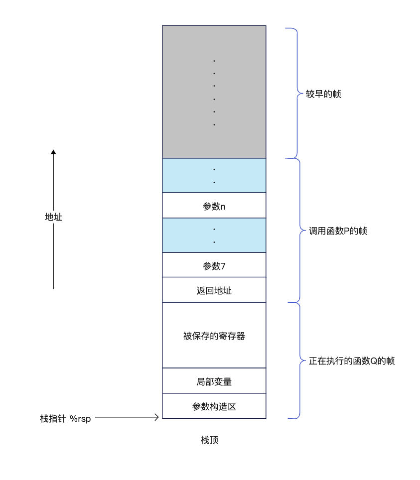
转移控制
将控制从函数 P 转移到函数 Q，只需要简单地把程序计数器（PC）设置为 Q 的起始地址。不过稍后从 Q 返回的时候，处理器必须记录好它需要从 P 的哪个位置继续执行。在 X86-64 系统中，这个信息是用指令 call Q 调用函数 Q 来记录的，该指令会把紧跟在 call 指令后面那条指令的地址压入栈中，并且把 PC 计数器设置为 Q 的起始地址，压入栈中的下一条指令的地址被称作返回地址。而对应的 ret 指令会从栈中弹出返回地址，并且把 PC 更新。
| 指令 | 描述 |
|---|---|
call Label |
函数调用 |
call *Operand |
函数调用 |
ret |
从函数调用中返回 |
数据传送
当函数调用时，除了要将控制传递给他并且在函数调用结束时再传递回来，函数调用还需要传递参数和返回值。x86-64 中，大部分的数据传递是通过寄存器实现的。当函数 P 调用 Q 时，P 的代码首先必须把参数复制到合适的寄存器中，而当 Q 返回时，P 的代码可以通过寄存器 %rax 而获取 Q 的返回值。
x86-64 中，可以通过寄存器最多传递6个整形（即整数和指针参数）。寄存器的使用也是有特殊顺序的，根据参数在参数列表中的顺序为他们分配寄存器，寄存器使用的名字取决于要传递的数据类型的大小。可以通过 64 位寄存器适当的部分访问小于 64 位的参数，例如，如果第一个参数是 32 位的，可以通过寄存器 %edi 来访问它。
| 操作数大小 | 参数1 | 参数2 | 参数3 | 参数4 | 参数5 | 参数6 |
|---|---|---|---|---|---|---|
64 |
%rdi |
%rsi |
rdx |
%rcx |
%r8 |
%r9 |
32 |
%edi |
%esi |
%edx |
%ecx |
%r8d |
%r9d |
16 |
%di |
%si |
%dx |
%cx |
%r8w |
%r9w |
8 |
%dil |
%sil |
%dl |
%cl |
%r8b |
%r9b |
如果一个函数有大雨6个整形参数，超出6个的部分就要通过栈来传递。假设函数 P 调用 Q，有 n 个整形参数，且 n > 6，那么 P 的代码分配的栈帧必须能够容纳 7 到 n 好参数的存储空间。也就是说，要把参数 1~6 复制到对应的寄存器，把参数 7~n 放到栈上，而参数 7 位于栈顶。通过栈传递参数的时候，所有的数据大小都向 8 的倍数对齐。参数放置到对应的位置以后，程序就可以执行 call 指令将控制转移到函数 Q 了，函数 Q 可以通过寄存器访问参数，有必要的话也可以通过栈访问。相应地，如果函数 Q 调用了某个有超过6个参数的函数，它也需要在自己的栈帧中为超过6个部分的参数分配空间，对应于栈帧结构图中的参数构造区。
1 | // test.c |
使用下面的命令输出汇编代码：
gcc -Og -S test.c
1 | q: |
跳转
程序开发中，除了顺序执行之外，还有就是分支语句，循环语句以及条件语句，根据数据测试的结果来决定执行哪些代码，这就涉及到程序的跳转执行。C语言中的语句和机器代码中的指令都是严格按照它们在程序中出现的次序顺序执行。可以使用 jump 指令改变一组机器代码指令的执行顺序，jump 指令指定控制应该被传递到程序的某个其他部分。
条件码
除了整数寄存器，CPU还维护者一组单个bit位的条件码寄存器，它们描述了最新的算数或者逻辑操作的属性，可以检测这些寄存器来执行条件分支指令，最常用的条件码有：
-
CF：进位标志。最近的操作使最高位产生了进位，可以用来检查无符号操作的溢出。例如，对于下面的代码，由于最高位会发生进位操作，相加的结果发生溢出，此时进位标志
CF会被置为1。1
2
3unsigned char a = 255;
unsigned char b = 1;
unsigned char t = a + b; -
ZF：零标志。最近的操作得出的结果位0；例如，对于下面的代码，当
a + b的结果等于0时，此时零标志ZF会被置为1：1
2
3int a = 1;
int b = -1;
int t = a + b; -
SF：符号标志。最近的操作得出的结果位负数； -
OF：溢出标志。最近的操作导致一个补码溢出，正溢出或者负溢出。
用一个统一的例子来说明条件码寄存器的变化，我们可以用一个 ADD 指令完成类似于 C 中 t = a + b 的操作，然后根据下面的表达式对条件码寄存器赋值：
CF：当(unsigned) t < (unsignd) a时，设置CF为1，表示存在无符号溢出；ZF：当t == 0时，设置ZF为1，表示最近计算结果位0；SF：当t < 0时，设置SF为1，表示最近计算结果位负数；OF：当(a <0==b<0) && (t < 0 ! =a<0)设置OF为1；
条件码寄存器的值是有ALU在执行算数和运算指令时写入的，下面的这些算数运算指令都会改变条件码寄存器的内容：
-
一元操作指令：
INC DDEC DNEG DNOT D
-
二元操作指令：
ADD S, DSUB S, DIMUL S, DOR S, DXOR S, DAND S, D
-
移位操作指令
SAL k, DSHL k, DSAR k, DSHR k, D
访问条件码
条件码同行不会被直接读取，常用的使用方法有三种：
- 可以根据条件码的某种组合将1个字节设置位0后者1；
- 可以条件跳转到程序的某个其他的部分；
- 可以有条件地传送数据；
对于方法一，我们有一类 SET 指令，它们之间区别是它们考虑的条件码组合是什么，这些指令的不同后缀表明了它们所考虑的条件码组合而不是操作数的大小。例如：
sete表示相等时设置（set when equal）setl表示小于时设置（set when less）setb表示低于时设置（set when below）setg表示大于时设置（set when greater）setnle表示不下于等于时设置，等同于setg
所有 SET 类的指令的列表由下表给出：
| 指令 | 同义名 | 效果 | 设置条件 |
|---|---|---|---|
sete D |
setz |
D<-ZF |
相等/零 |
setne D |
setnz |
D<-~ZF |
不等/非零 |
sets D |
D<-SF |
负数 | |
setns D |
D<-~SF |
非负数 | |
setg D |
setnle |
D<-~(SF^OF) & ~ZF |
大于（有符号） |
setge D |
setnl |
D<-~(SF^OF) |
大于等于（有符号） |
setl D |
setnge |
D<-SF^OF |
小于（有符号） |
setle D |
setng |
`D<-(SF^OF) | ZF` |
seta |
setnbe |
D<-~CF & ~ZF |
超过（无符号>） |
setae |
setnb |
D<-~CF |
超过或者相等（无符号>=） |
setb |
setnae |
D<-CF |
低于（无符号<） |
setbe |
setna |
`D<-CF | ZF` |
CMP 和 TEST
CMP S1, S2 指令会根据 S2-S1 之差来设置条件码寄存器，除了只设置条件码寄存器而不更新目的寄存器之外，和 SUB 是一样的。
TEST S1, S2 指令会根据 S1 & S2 来设置条件码寄存器，除了只设置条件码寄存器而不更新目的寄存器之外，和 AND 是一样的。
- 示例1，对于下面的代码，我们目的是
a==b相等返回1，不相等返回0
1 | int comp(long a, long b) { |
输出的汇编程序如下，参数 a 会被放在 %rdi 中，参数 b 会被放在 %rsi 中，那么 cmpq %rsi, %rdi 就会执行 a - b，决定是否将 ZF 条件码寄存器设置为 1，否则是 0。最终 sete 指令将 ZF 指令的值放到 %al 寄存器，并由 movzbl 进行零扩展。
1 | comp: |
- 示例1，对于下面的代码，我们目的是
a < b相等返回1，不相等返回0
1 | int comp(long a, long b) { |
输出的汇编程序如下，读取条件码寄存器的指令由之前的 sete 变成了现在的 setl，含义是如果 a<b，就将 al 设置为1。
1 | comp: |
setl 指令的结果实际上是由 SF ^ OF 计算得出，因为是有符号数相减我们需要考虑溢出的情况，单独考虑 SF 标志无法得出正确的结论：
a < b，那么t < 0，所以SF = 1，OF = 0，结果SF ^ OF = 1；a > b，那么t > 0，所以SF = 0, OF = 0，结果SF ^ OF = 0；a < b，例如a = -2, b = 127，但是a - b = 127 > 0，所以SF = 0，OF = 1，结果SF ^ OF = 1；a > b，例如a = 1, b = -128，但是a - b = -127 < 0，所以SF = 1，OF = 1，结果SF ^ OF = 0
跳转指令
正常执行情况下，指令会按照它们出现的顺序一条一条的执行，跳转指令会导致执行切换到程序的一个全新的位置，在汇编代码中，这些跳转的目的地通常用一个标号标明，我们看下面的示例：
其中，jle .L2 指令表示如果 a <= b 则跳转到 .L2 处继续执行，它是根据 (SF ^ OF) | ZF 条件指令的组合的结果进行跳转。还有一种无条件跳转指令 jmp，它可以是直接跳转，即跳转目标时作为指令的一部分编码的；也可以是间接跳转，即跳转目标是从寄存器或者内存位置中读出的。汇编语言中，直接跳转时给出一个标号作为跳转目标的，例如上面中的 .L2。间接跳转的写法是 *后面跟一个操作数指示符。例如：
jmp *%rax用寄存器%rax的值作为跳转目标jmp *(%rax)从寄存器%rax代表的内存地址读出跳转目标
以下列出常用的跳转指令列表：
| 指令 | 同义名 | 跳转条件 | 描述 |
|---|---|---|---|
jmp Label |
1 | 直接跳转 | |
jmp *Oprand* |
1 | 间接跳转 | |
je Label |
jz |
ZF |
相等/零 |
jne Label |
jnz |
~ZF |
不相等/非零 |
js Label |
SF |
负数 | |
jns Label |
~SF |
非负数 | |
jg Label |
jnle |
~(SF^OF) & ~ZF |
大于（有符号） |
jge Label |
jnl |
~(SF^OF) |
大于等于（有符号） |
jl Label |
jnge |
(SF^OF) |
小于（有符号） |
jle Label |
jng |
`(SF^OF) | ZF` |
ja Label |
jnbe |
~CF & ~ZF |
超过（无符号） |
jae Label |
jnb |
~CF |
超过或者相等（无符号） |
jb Label |
jnae |
CF |
低于（无符号） |
jbe Label |
jna |
`CF | ZF` |
条件移动指令
跳转指令会运用到CPU的分支预测功能，如果预测失败会带来较大的性能损耗，如果我们对上面的 absi 代码使用编译器优化 gcc -O1 -S source.c，就会得到下面的汇编指令：
1 | absi: |
可以看到的是这里没有了跳转指令，而是使用了 cmovg 指令，按照寄存器的使用规则，参数 a 是在 %edi 中，参数 b 是在 %esi 中，返回值会放在 %eax 中返回，更多的条件移动指令如下表所示，理解下面的描述一般情况下结合之前的 cmp 指令更容易理解：
| 指令 | 同义名 | 传送条件 | 描述 |
|---|---|---|---|
cmove S,R |
comvz |
ZF |
相等/零 |
cmovne S,R |
comvnz |
~ZF |
不相等/非零 |
cmovs S,R |
SF |
负数 | |
cmovns S,R |
~SF |
非负数 | |
cmovg S,R |
cmovnle |
~(SF ^ OF) & ~ZF |
大于（有符号） |
cmovge S,R |
cmovnl |
~(SF ^ OF) |
大于等于（有符号>=） |
cmovl S,R |
cmovnge |
SF ^ OF |
小于（有符号<） |
cmovle S,R |
cmovng |
`(SF ^ OF) | ZF` |
cmova S,R |
cmovnbe |
~CF & ~ZF |
超过（无符号） |
cmovae S,R |
cmovnb |
~CF |
超过或相等（无符号>=） |
cmovb S,R |
cmovnae |
CF |
低于（无符号<） |
cmovbe S,R |
cmovna |
`CF | ZF` |
Go 汇编
众所周知，Go 汇编器基于 plan9 汇编。那什么是 plan9 呢？plan9 来自于贝尔实验室的第九号计划，是一种概念操作系统， 基于现代化思想重新设计操作系统，目标是实现 UNIX 最初的承诺：一切皆文件。Plan 9的特色功能有：将所有本地和远程资源以文件形式组织的9P协议，union mounts，改进的进程文件系统以及本地的Unicode支持。在Plan 9中，所有的系统接口（如网络和用户界面接口），都是作为文件系统的一部分呈现，而不像其他操作系统上一样拥有自己独立的接口。
Go语言采用 plan9 系统的汇编部分原因是开发者都是同一批人，Go 编译器输出的汇编其是一种抽象，并没有映射到实际的硬件， Go 汇编器会将这个伪汇编翻译成目标硬件的机器语言。拥有这样一个中间层的最大优势在于它更容易适应新的架构，更多详细的可以看 GopherCon 2016: Rob Pike - The Design of the Go Assembler。关于 Go 汇编最重要的一点是 Go 汇编不直接对应于目标硬件这一事实，有些与硬件直接相关，但有些则没有。就像当我们类似 MOV 指令时，工具链位该操作实际生成的可能根本不是移动指令，可能是清除指令或加载指令等，或者他可能与具有该名称的机器指令完全对应。Go汇编作为连接器的输入，在生成机器码的时候才转换成对应平台相关的指令。
汇编示例
Go 的汇编程序是一种解析该半抽象指令集的描述并将其转换为要输入到链接器的指令的方法，我们来看以下面一段简单的 Go 代码被Go编译器转换成 Go汇编 是什么样子：
1 | package main |
环境信息如下：
go version go1.17.8 linux/amd64
Linux ecs-335906 4.18.0-348.7.1.el8_5.x86_64 #1 SMP Wed Dec 22 13:25:12 UTC 2021 x86_64 x86_64 x86_64 GNU/Linux
我们可以使用下面的不同的命令查看 Go汇编代码 和 目标平台汇编代码，对比发现 Go汇编 中存在很多的伪指令。
使用命令：go tool compile -S add.go，这将生成的 GO 表示的汇编，或者可以使用命令 go build -gcflags="-S" add.go 生成。
1 | "".add STEXT nosplit size=4 args=0x10 locals=0x0 funcid=0x0 |
如果我们已经生成可执行文件，我们还可以通过 GO 提供的反汇编工具查看 Go汇编:
1 | [root@ecs-335906 add]# go tool objdump -s main.add add |
在生成对应平台的二进制文件之后，我们通过调试工具查看 add 函数的汇编代码。第一种方式我们可以通过 dlv ：
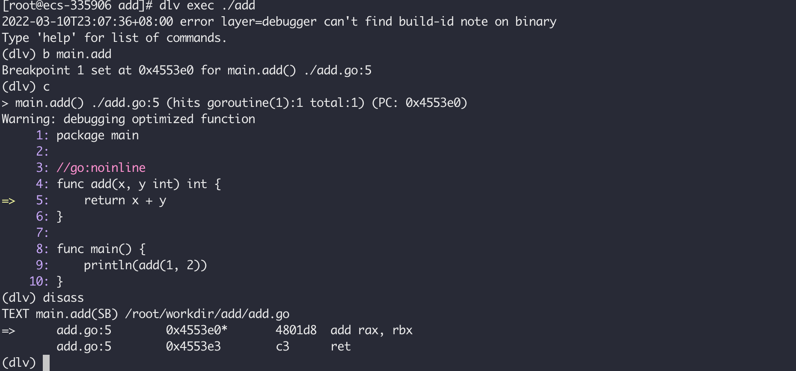
或者通过 gdb：
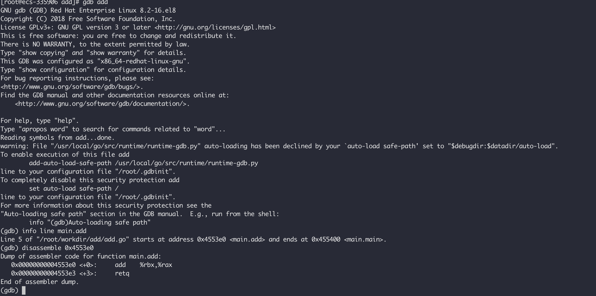
或者通过反汇编工具 objdump：
objdump -d add > add.obj
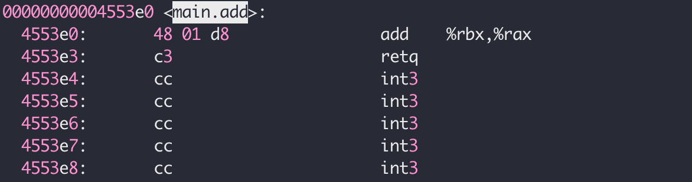
编译过程
本节内容主要来源于 Go: Overview of the Compiler 和 Introduction to the Go compiler。Go的编译过程包含四个阶段，被分成两类：
-
编译前端：此阶段从源代码运行分析并生成源代码的抽象句法结构，称为 AST。 -
编译后端：第二阶段将源代码的表示形式转换为机器代码，并进行一些优化。
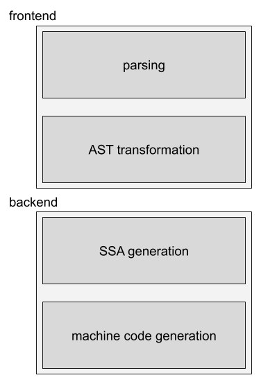
由下面的一段代码展示这四个过程：
1 | package main |
解析
这个阶段的主要实现是在 cmd/compile/internal/syntax 中，在编译的第一阶段，对源代码进行分词（词法分析）、解析（语法分析），并为每个源文件构建语法树。
每个语法树都是相应源文件的精确表示，其节点对应于源文件的各种元素，例如表达式、声明和语句。语法树还包括位置信息，用于错误报告和调试信息的创建。
1 | root@b89af2baca14:/WORKDIR/gostudy/compile# go run tokenized.go |
1 | package main |
分词之后就可以拿去构建语法树。
类型检查和AST转换
这部分的代码实现主要在 cmd/compile/internal/gc，小写 gc 代表 go compile，大写 GC 代表 Garbage Collector。
这个阶段的第一件事情是将 cmd/compile/internal/syntax 的语法树转换为编译器的 AST 表示，接下来就是名称解析和类型推断，确定哪个对象属于哪个标识符，以及每个表达式具有什么类型。
这个阶段还会做一些优化，例如内联，我们可以使用 go tool compile -w 查看这些细节：
将我们的代码保存为 main.go 之后，我们可以使用 go tool compile -w 查看这个过程，我们没有看到第7行存在函数调用。
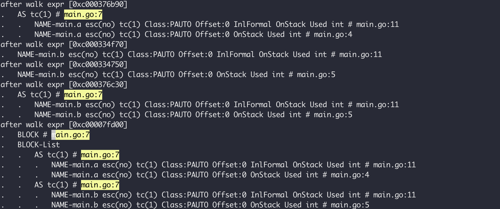
禁用内敛优化，我们可以使用 go tool compile -w -l 查看这个过程，我们在第7行看到了调用 add 函数。
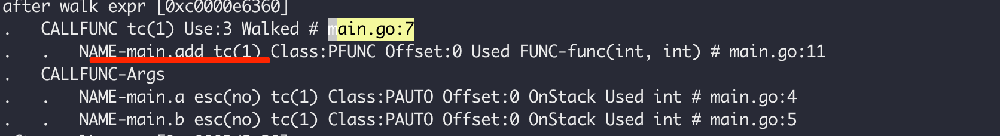
SSA 代码生成
这个阶段会将 AST 被转换为静态单一分配 (SSA（静态单赋值形式）) 形式，这是一种具有特定属性的较低级别的中间表示，可以更轻松地实现优化并最终从中生成机器代码。 在此转换期间，编译器将会根据情况应用高度优化的代码完成代码自动优化。
在 AST 到 SSA 的转换过程中，某些节点也被降低为更简单的组件，以便编译器的其余部分可以使用它们。例如，内建的 copy 被内存移动所取代，并且 range 循环被重写为 for 循环。
然后，应用一系列与机器无关的通行证和规则。这些不涉及任何单一的计算机架构，因此可以在所有 GOARCH 变体上运行。这些通用传递的一些示例包括消除死代码、删除不需要的 nil 检查和删除未使用的分支。通用重写规则主要关注表达式，比如用常量值替换一些表达式，优化乘法和浮点运算。
这部分的实现在：
cmd/compile/internal/gc（AST 转换成SSA）cmd/compile/internal/ssa（应用一系列优化手段和基于架构的一些规则）
使用如下的命令可以生成 SSA 代码：
GOSSAFUNC=main go tool compile main.go && open ssa.html
这个生成的 HTML 文档会展示在生成最终代码的过程中应用了哪些规则，例如下面的，由于我们代码中的 a 和 b 是常量，a + b 的和也是已知的，所以应用 opt 规则，直接将其结果存储，并将原来的 a 和 b 删除。
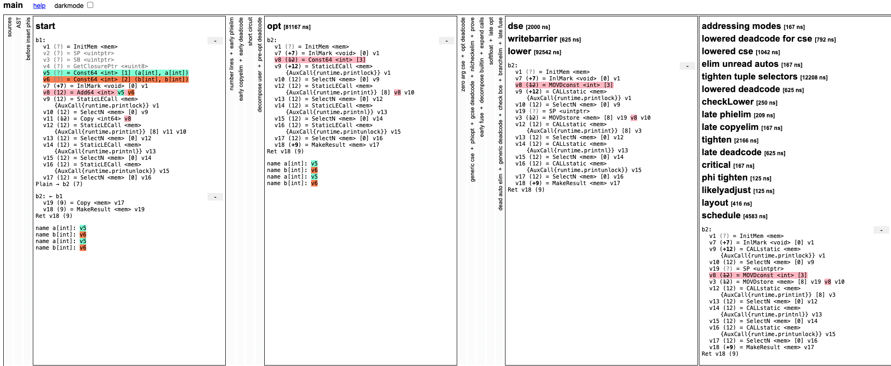
一旦将所有能用的优化手段都运用完之后，就会生成一个中间的汇编代码，就是我们的 GO汇编：
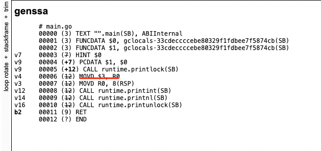
使用如下的命令可以生成 SSA 代码：
GOSSAFUNC=main go tool compile -l main.go && open ssa.html
这里我们禁用优化，可以看到最终生成的 SSA 和我们的源代码基本相同，a 和 b 两个变量没有被优化掉，没有使用 opt 优化规则：
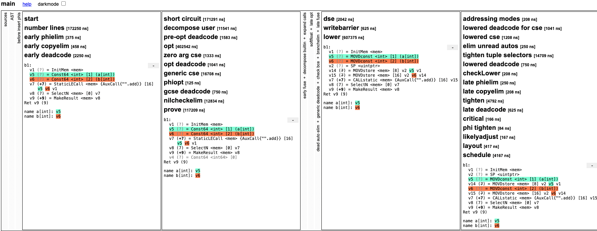
生成的Go汇编中也可以证明这个：
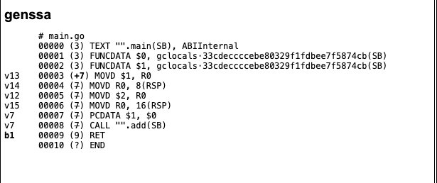
生成机器代码
这部分的实现主要在：
cmd/compile/internal/ssa(SSA 降级成平台相关的表示，并且进行优化，不再是中间码)cmd/internal/obj（机器代码生成）
一旦 SSA 被“降低”并且更具体到目标架构，最终的代码优化通道就会运行。这包括另一个死代码消除过程、将值移近它们的用途、删除从不读取的局部变量以及寄存器分配。
作为此步骤的一部分完成的其他重要工作包括堆栈帧布局，它将堆栈偏移量分配给局部变量，以及指针活性分析，它计算在每个 GC 安全点处哪些堆栈指针处于活动状态。
在 SSA 生成阶段结束时，Go 函数已转换为一系列 obj.Prog 指令。这些被传递给汇编器（cmd/internal/obj），汇编器将它们转换为机器代码并写出最终的目标文件。目标文件还将包含反射数据、导出数据和调试信息。
Go 汇编 可以作为链接器的直接输入生成机器代码，例如：
1 | package main |
使用 go tool compile -S hello.go 将会直接输出 Go汇编 并且生成这个 hello.o 文件。使用 go tool link hello.o 将会链接并且生成可执行文件：
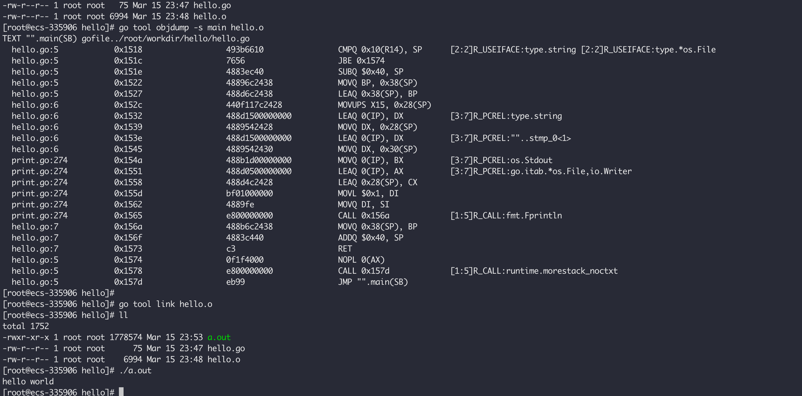
汇编语言
本节的内容主要基于https://go.dev/doc/asm，详细描述Go汇编语言与 x86-64 不同的地方，相对于 x86-64，Go汇编 添加了一些伪指令用于汇编代码的快速开发，但是使用的指令还有通用寄存器命令仍然与特定平台相关，伪寄存器在链接阶段会被转换。
以 x86-64 平台为例，我们可以在以下文件中找到寄存器和指令列表：
以通用64位寄存器为例，Go汇编中对寄存器的名称做了些许修改：
| X86-64 | rax | rbx | rcx | rdx | rdi | rsi | rbp | rsp | r8 | r9 | r10 | r11 | r12 | r13 | r14 | rip |
|---|---|---|---|---|---|---|---|---|---|---|---|---|---|---|---|---|
| Go汇编 | AX | BX | CX | DX | DI | SI | BP | SP | R8 | R9 | R10 | R11 | R12 | R13 | R14 | PC |
也有一些指令别名，例如 MOVD 实际上就是 MOVQ 的别名，这些定义可以查看https://github.com/golang/go/blob/7ca6902c171b336d98adbb103d701a013229c806/src/cmd/asm/internal/arch/arch.go#L102。
从Go源代码转换为Go汇编有3中不同的方式，根据场景自行取用：
go tool compile -S x.gogo build -gcflags="-S" x.gogo build -o main main.go && go tool objdump -s main.main main（先编译然后反汇编）
常量
虽然Go汇编受 plan9 影响，但仍然有众多不同。在常量估值方面，汇编代码中常量表达式使用Go的运算符优先级规则解析，而不是原始的C规则。例如，对于表达式 3&1<<2，它的结果是 4（(3&1)<<2），而不是 0（3&(1<<2)）。还有就是数值常量总是被计算为 64 位无符号整数，因此 -2 会被计算为具有相同二进制形式的整数，它最终表现为 -2 还是 65534，取决于我们为这个变量添加的类型。例如，下面的代码会输出：
num1=65534, num2=-2
1 | package main |
1 | #include "textflag.h" |
在Go汇编中，全局变量由一系列的 DATA 指令和紧跟其后的 GLOBL 指令完成，每个 DATA 指令初始化对应内存的一部分，没有被显示初始化的内存将被清零，DATA 指令的通用形式是：
DATA symbol+offset(SB)/width, value
具体含义是，将变量 symbol 从 offset 开始的 width 宽度的内存，用 value 对应的值进行初始化，width 必须是 1，2，4，或者 8，offset和 width 对应的单位都是字节。
GLOBL 指令一般跟在 DATA 指令之后，声明变量是全局变量，如果 DATA 没有对它进行初始化，它的值将是全0。例如：
1 | DATA divtab<>+0x00(SB)/4, $0xf4f8fcff |
这个例子中定义和声明了文件私有的（<>），64 Bytes 的变量 divtab。也声明了一个 4 Bytes 的未包含指针（NOPTR）的只读（RODATA）零值变量 runtime·tlsoffset。GLOBL 除了声明符号的大小之外，可能还会有1个参数用来指定符号的一些属性，这些属性定义在文件 src/runtime/textflag.h 中，主要有：
NOPROF = 1: (ForTEXTitems.) Don’t profile the marked function. This flag is deprecated；DUPOK = 2: 允许相同符号在二进制文件中有多个，链接器选择其中一个使用即可；NOSPLIT = 4: (ForTEXTitems.) 不要插入用来检查是否需要栈扩展的代码；RODATA = 8: (ForDATAandGLOBLitems.) 声明变量是只读的，将被放在二进制文件只读段；NOPTR = 16: (ForDATAandGLOBLitems.) 声明的变量不包含任何指针，垃圾回收器不用扫描；WRAPPER = 32: (ForTEXTitems.) This is a wrapper function and should not count as disablingrecover；NEEDCTXT= 64: (ForTEXTitems.) This function is a closure so it uses its incoming context register；LOCAL = 128: 此符号是动态共享对象的本地符号；TLSBSS = 256: (ForDATAandGLOBLitems.) 把这个变量放到线程的本地存储中；NOFRAME = 512: （对于TEXT项。）不要插入指令来分配堆栈帧并保存/恢复返回地址，即使这不是叶函数。仅对声明帧大小为0的函数有效；TOPFRAME = 2048: (For TEXT items.) Function is the outermost frame of the call stack. Traceback should stop at this function；ABIWRAPPER：表示函数是一个ABI包装器；
寄存器
Go汇编定义了一些由工具链维护的伪寄存器，这些寄存器对所有的架构都是通用的：
FP：用于访问函数参数和局部变量；PC：程序计数器，等同于x86-64中的%rip；SB：静态基指针，用于访问全局变量；SP：栈指针，指向函数栈帧的高地址；
通过 SB 和 FP 这两个伪寄存器，我们可以访问所有我们定义的函数和变量。
SB
SB 寄存器可以被看做是对原始内存的访问，所以 foo(SB) 指向变量 foo 的内存地址，它被用于去引用全局变量和函数。在定义的符号后面添加 <> 表示这个符号只能在当前文件内被使用。在符号后面可以添加一个 offset，例如 foo+4(SB) 表示从 foo 的第四个字节开始。
例如，我们定义一个 uint16 的变量 num，给他赋值 0xABCD，十进制是 43981，二进制表示是 10101011 11001101，我们可以用下面的汇编代码对他进行初始化，Go汇编代码有个要求就是结尾必须有个空行，否则编译会报错：
1 | #include "textflag.h" |
FP
栈帧是操作系统为函数调用在栈上开辟的内存空间，它包含自己的局部变量和被调函数的参数。我们可以通过Go语言中的 FP伪寄存器和一个偏移量访问当前函数的参数。所以说在 64位系统上， 0(FP)是第一个参数，8(FP) 是第二个参数。但是当使用这种方式引用函数参数时，我们必须加上变量名，例如 first_arg+0(FP)，second_arg+8(FP)，这是Go的汇编器强制要求，但是名称是什么无所谓，不必须和函数签名一致。要注意区分的是，foo+8(FP) 和 foo+8(SB)，前者时相对于 FP 进行偏移，而后者是相对于 foo 的起始地址进行偏移。
对于Go定义的函数，go vet 将会检查参数名称是否和偏移量匹配。另外，在32 位系统上，64 位值得低 32 位和高 32 位可以通过在名称后面添加 _lo 和 _hi 后缀进行区分。例如，arg_lo+0(FP) 和 arg_hi+4(FP)，如果函数没有对返回值命名，那么默认为 ret。
为了说明对 FP 伪寄存器的使用，我们准备如下的例子，例子很简单，就是实现对全局变量 numa 和 numb 的交换，我们使用汇编实现 p 和 q 函数，就是想演示通过栈如何传递参数以及栈的布局，这两个函数如果用Go实现就是：
func p() {numa, numb = q(numa, numb)}
func q(a, b uint32) (ret0, ret1 uint32) {return b, a}
1 | package main |
将汇编代码和Go代码一起编译运行是没有任何问题的，现在我们来画处当进入 q 函数内时，p 和 q 栈帧示意图。有一点需要提前了解的是，我们在为 p 函数分配栈帧的时候，不需要分配它调用 q 时存储返回地址（CALL 指令下一条指令地址）的空间，CALL 指令执行的时候会自动扩展栈，将返回地址压栈，可以通过 dlv 调试代码查看寄存器值得变化以及对应内存值。所以当我们执行 q 函数的时候，看到的栈空间以及 FP 的位置如下图：
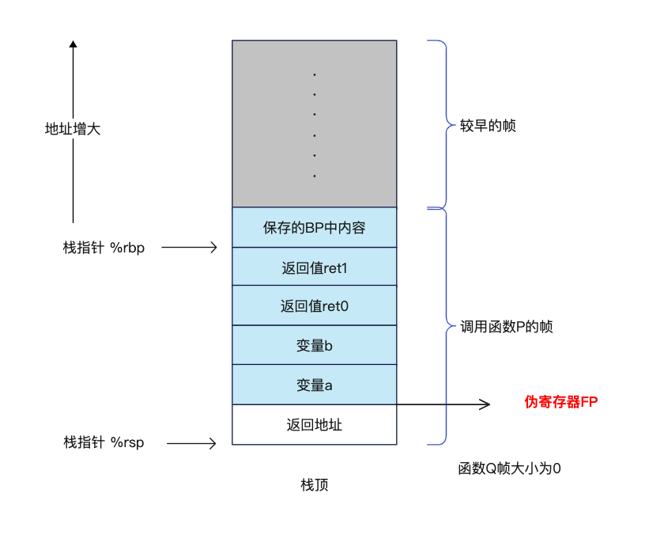
下面的汇编代码中，只使用了虚拟寄存器 FP，在函数 q 中，使用硬件寄存器 SP 将 q 的参数放置到栈上：
1 | #include "textflag.h" |
SP
虚拟机寄存器 SP 是一个虚拟栈指针，用于访问局部变量和那些为函数调用准备的参数，它指向栈帧的最高地址，所以引用应该用负偏移量，区间是 [−framesize, 0)，例如 x-8(SP)，以及 y-4(SP) 等。
Go汇编中，由于 SP 和 PC 是某些物理寄存器的别名，所以要想访问真实的寄存器，需要使用真正的以 R 开头的名字，例如，在 ARM 上，SP 和 PC 对应于 R13 和 R15。
还是上面 FP 中的示例，不过在前面，我们在函数 p 中是使用物理寄存器SP为被调函数 q 准备参数和访问其返回值，这次我们使用伪寄存器SP 做这些事情，并且下面给出的是函数 p 的栈帧示意图和汇编实现：
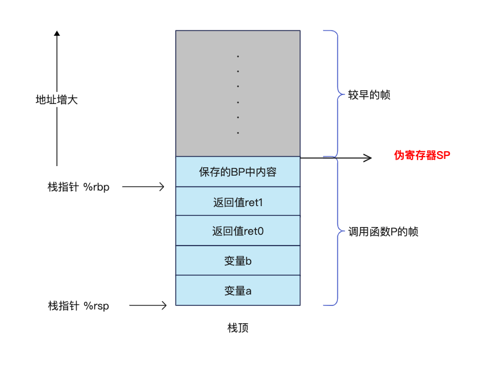
1 | #include "textflag.h" |
常量与结构体
如果 go 的包包含 .s 文件，go build 就会让编译器输出一个特殊的头文件 go_asm.h，然后这个 .s 文件可以 #include "go_asm.h"。这个文件中包含了Go代码中定义的常量符号，以及结构的大小和结构体字段的偏移量。例如，我们有下面的常量和结构体定义：
1 | const bufSize = 1024 |
那么会生的 go_asm.h 文件内容如下，所以我们可以在汇编代码中以 const_bufSize 访问常量 bufSize；通过 reader__size 获取 reader 结构体的大小；通过 reader_buf 和 reader_r 可以获取字段 buf 和字段 r 相对于 reader 的偏移量。可以通过 go build -work -x 命令输出编译过程和工作目录，在工作目录中可以找到到 go_asm.h。
1 | // generated by compile -asmhdr from package main |
我们做个示例，使用 outputVars 调用 printInt 函数，输出 const_bufSize，reader__size，reader.buf[1] 以及 reader.r，Go 代码和汇编代码如下所示，运行这段代码将会输出:
1024 4100 1 8
1 | #include "textflag.h" |
1 | package main |
运行时
Go 是一个具有垃圾回收的语言，为了让 GC 运行正确，运行时必须清楚地指导指针在全局数据中和栈帧中的位置。当编译Go代码的时候，编译器会输出这个信息，但是汇编程序必须显示地定义它。
带有 NOPTR 标识的符号被认为不包含任何指针，带有 RODATA 标志的数据会会在只读内存空间中分配内存，隐式带有 NOPTR 标记。如果一个数据的总大小小于指针大小（8字节），也会被隐式打上 NOPTR 标记。在汇编代码中定义一个指针变量是不可能的，这样的数据必须被定义在Go代码中。既是声明的某个变量在汇编代码中没有被用 DATA 和 GLOBL 指令声明，汇编代码仍然可以按名称访问到它。一般情况下，我们只在Go代码中定义非 RODATA 的数据。
每个函数也需要给出它的参数，返回值以及栈帧中可能包含的指针的位置。对于没有指针结果、没有本地堆栈帧或没有函数调用的汇编函数，唯一的要求是在同一包中的 Go 源文件中为函数定义 Go 原型签名。汇编代码中的函数不能包含包名，例如，对于 syscall 包中的 Syscall 函数，在 Text 指令中应该使用 ·Syscall 而不是 syscall·Syscall。对于其他更复杂的场景，可以使用定义在 src/runtime/funcdata.h 中的伪指令。
如果一个函数没有参数也没有结果，指针信息是可以被省略的。这在 Text 指令中可以使用 $n-0 这样的帧参数大小形式声明。否则指针信息必须在Go文件中通过Go原型声明提供。在函数开始部分，函数参数是被认为初始化的，但是返回值是被认为是未初始化的。如果返回值在函数调用期间保存了指针，则该函数应首先将返回值归零，然后执行伪指令 GO_RESULTS_INITIALIZED。该指令表示返回值现在已经初始化并且应该在堆栈移动和垃圾收集期间进行扫描。通常情况下汇编函数不应该返回指针或不包含调用指令，标准库中没有汇编函数使用 GO_RESULTS_INITIALIZED。
如果一个函数没有栈帧，指针信息是会被省略的，在 Text 指令中，会被表示成 $0-n。如果函数是叶子函数，也就是没有函数调用，指针信息也是可以被省略的。否则，必须通过指令 NO_LOCAL_POINTERS 来说明函数栈帧是没有包含任何指针的。因为堆栈大小调整是通过移动堆栈来实现的，所以堆栈指针可能会在任何函数调用期间发生变化：即使指向堆栈数据的指针也不能保存在局部变量中。
写汇编函数的时候，我们应该总是提供Go的原型声明，也就是使用Go代码呈现函数签名，这样，既可以位参数和结果提供指针信息，也可以让 go vet 检查用于访问它们的偏移量是否正确。
架构相关信息
列出某个平台的所有指令或者其他细节是不现实的，想要看到特定平台下面有哪些指令，例如：ARM 平台，我们可以去这里 src/cmd/internal/obj/arm，这个文件里面有一系列以字母 A 开头的常量，例如：
1 | const ( |
这个列表中指令的名字和拼写，这个平台下对应的汇编器和链接器都是已知的。每个指令虽然都是以 A 开头，例如 AAND，但是它实际代表的指令是 AND ，在汇编代码中也是写作 AND。我们熟知的 X86-64 结构对应的指令列表是在 cmd/internal/obj/x86/a.out.go。
所有架构共享以下的寻址方式，每个架构可能也有自己特定的寻址方式：
(R1)， 寄存器简洁寻址；4(R1)，寄存器使用偏移量间接寻址；$foo(SB)，绝对寻址
在Go汇编系统中，如我们上面描述的例子所展示的那样，汇编指令中，我们的数据都是从左流向右，即源操作数在做，目的操作数在右。例如：MOVQ $0, CX，将 0 移动到 CX 寄存器，已达到清空寄存器的目的。这个数据流向规则在那些使用相反方向数据流的架构中依然适用。
下面我们展示几个我们熟知的架构 X86平台，其他的请看A Quick Guide to Go’s Assembler：
32-bit Intel 386
指向 g 结构的运行时指针是通过 MMU 中未使用的（就 Go 而言）寄存器的值来维护的。在运行时包中，汇编代码可以包含 go_tls.h，它定义了一个依赖于操作系统和体系结构的宏 get_tls 用于访问该寄存器。get_tls 宏接受一个参数，即加载 g 指针的寄存器。
例如，可以使用下面的代码将 g 和 g.m 分别加载 AX 和 BX 中：
1 | #include "go_tls.h" |
这个宏在 amd64 架构下也有定义，请查看 src/runtime/go_tls.h，它的内容是:
1 |
x86 系统中， TLS 中存储的是当前 g 的地址，goroutine ID 存储在 g.goid 字段中，go1.16.* 版本中，g.goid 的偏移量是 152，我们可以通过下面的代码实现goid的获取：
1 | #include "textflag.h" |
1 | package main |
偏移量的计算我们可以通过 dlv 调试器在用户态任意函数任意位置断住，使用如下的指令获取：
(dlv) p &runtime.curg
(*runtime.g)(0xc000000180)
(dlv) p &runtime.curg.goid
(*int64)(0xc000000218)
(dlv) p 0xc000000218-0xc000000180
152
(dlv)
特有的寻址方式如下：
(DI)(BX*2): 代表的地址是：DI + BX * 264(DI)(BX*2): 代表的地址是：64 + DI + BX * 2，比例因子只能是1，2，4或者8。
使用编译器和汇编器的 -dynlink 或 -shared 模式时，必须假设对固定内存位置（例如全局变量）的任何加载或存储都会覆盖 CX。因此，为了安全使用这些模式，汇编代码通常应避免使用 CX，除非在内存引用之间。
64-bit Intel 386 (AMD64)
这两种架构在汇编级别表现基本相同，访问运行时 g 和 m 的方式也和 32 bit x86 架构是一样的，只是这里的使用的指令是 MOVQ 而不是 MOVL。另外。
作为被调用者需要保存 BP，汇编器会自动在帧大于0的函数中插入 BP 保存和恢复的指令。允许使用 BP 作为通用寄存器，但是这会干扰采样分析。